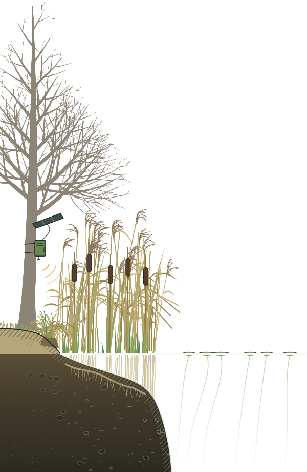
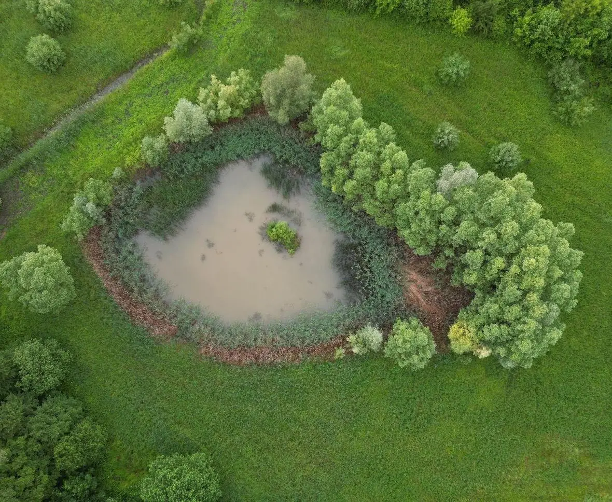
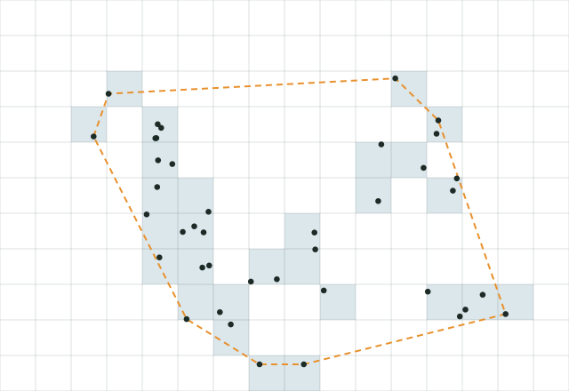
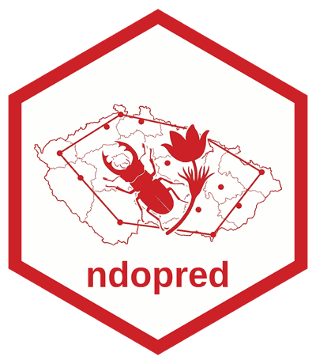

Ecologist and conservationist
Monitoring that tells us how nature is doing: amphibians, ponds and Natura 2000 in Czechia.
I work in the Department of Biodiversity Monitoring at the Nature Conservation Agency of the Czech Republic and am a PhD student at the Faculty of Environmental Sciences, Czech University of Life Sciences Prague. My work is about systemic change in the methods used to monitor and evaluate the state of species and habitats in the Natura 2000 network and of key umbrella species in Czechia.

water surface
Let's work together
I'm looking to collaborate on exploring biodiversity trends in Czechia, evaluating the condition of protected species, and assessing the impact of conservation interventions.
Deep water the wider picture
Beyond single ponds, I build nation-wide tools for the management and governance of biodiversity conservation in Czechia: how species and habitats are doing across the whole country, and how threatened they are.

National system Nature Conservation Agency Condition evaluation of species and habitats A system that evaluates the condition of species and habitats in the Natura 2000 network and of taxa with active species protection tools in place. It aggregates monitoring data, applies the evaluation rules consistently, and produces results that compare between sites, regions and reporting periods. Code: host_naturecz

R package IUCN Red List ndopred Turns occurrence records from NDOP, the Agency's species occurrence database, into IUCN Red List metrics and categories for national and regional Red List work: extent of occurrence, area of occupancy and population trends, following the IUCN criteria (v3.1) and the 2024 guidelines. Two Shiny dashboards: one for screening long lists of taxa, one for settling a category taxon by taxon.The sediment what has settled, newest on top
Deeper the projects underneath
Ten projects, tools and missions in four clusters, on one time line.
Biodiversa+ pilots that test novel monitoring methods across countries: automated stations, insects by DNA metabarcoding, and ponds.
Two integrated LIFE projects. My work on condition evaluation began in the first and continues in the second.
The condition evaluation system started within LIFE-IP N2K Revisited in 2020; ndopred followed in December 2025. Both are ongoing.
Natura 2000, monitoring and data systems, shared with Ukrainian conservation authorities, and with Kosovo on transposing the Habitats and Birds Directives.
I'm always happy to hear from fellow ecologists, conservation practitioners, and anyone working on biodiversity monitoring. The best way to reach me is by email.